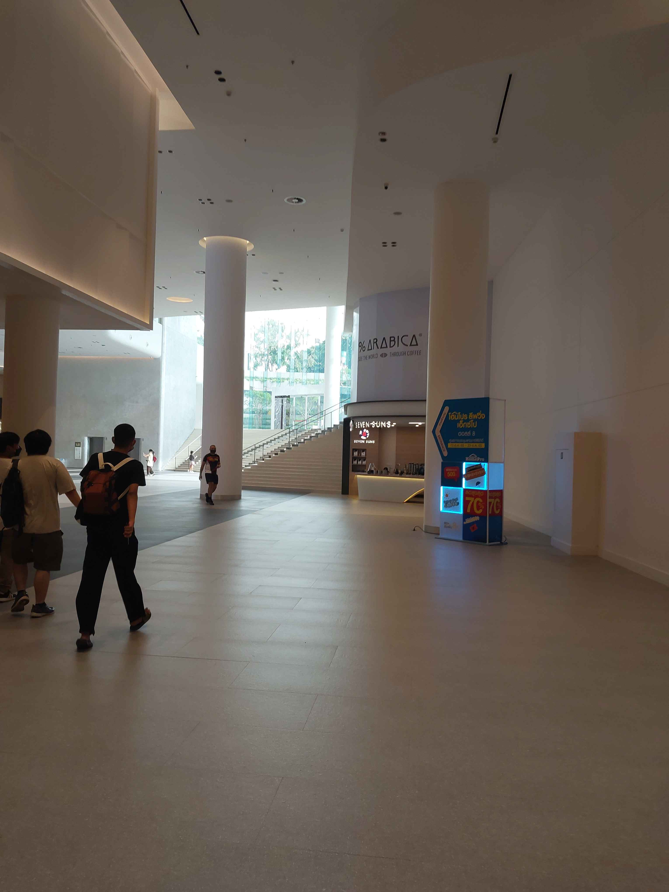

รวมตัวงานหนังสือ
15 ต.ค. 2566
วันนี้เป็นวันรวมตัวกันกับเพื่อนสมัยมัธยมหลายๆ คน เพื่อเข้าดูงานหนังสือที่ศูนย์การประชุมแห่งชาติสิริกิติ์
วันนี้เป็นวันที่ผมได้เข้าวงการเกี่ยวกับหนังสือการ์ตูนเป็นครั้งแรกแบบจริงๆจังๆ ระหว่างที่เดินดูหนังสือ
ผมได้ไปสะดุดตาเข้ากับหนังสือการ์ตูนเล่มหนึ่ง ชื่อ Random Shorts เป็นหนังสือเกี่ยวกับวัยมหาลัย
ของ เกษม อภิชนตระกูล / เกษม มาเยือน ผมเลยซื้อมาลองอ่านเล่มนึงและหลังจากนั้นก็ได้ซื้อเล่มต่อมาเรื่อยๆ
และได้ไปขอลายเซ็นทุกๆ ครั้ง ที่มีงานหนังสือที่ศูนย์การประชุมแห่งชาติสิริกิติ์
